Getting Started
Requirements
You can run Recaf with Java 8 or higher (Its reccomended that you use the lastest jdk8 release from jdk.java.net). Using Java 9 and higher requires an additional step to use.
Java 8: No additional steps required.
Java 9+: Update the controlsfx dependency in the pom.xml such that the 8.40.14 release is changed to the 9.0.0 release. You can then build from the source code with maven (Open a terminal and enter mvn package assuming you have Maven installed). Be aware that the github releases are based on Java 8.
Running & Updates
To get the latest version of Recaf you can either download the source code and compile with maven or grab a binary from the releases page.
As a jar file you can double click it to run Recaf. However it is reccomended that you launch via command line so you can specify the JDK java executable. Doing this will unlock additional features that rely on JDK functionality (tools.jar). For example on windows you would use the following command:
"C:\Program Files\Java\jdk1.8.0_202\bin\java.exe" -jar recaf.jar
Note: To ensure the classpath contains the contents of jdk\lib\tools.jar copy it into your jdk\jre\lib\ext folder.
Note: You can automate opening files via command line: java -jar recaf.jar -i MyJar.jar -c com/example/MyClass
Note: When launching Recaf you will be notified about updates as they come out. You can change this behavior in the config menu.
User Interface: Main Window
Navbar & Toolbar
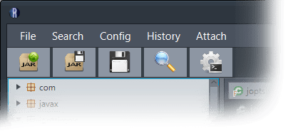Across the top of the window are two bars, the Navbar and the Toolbar. The Navbar is the first bar and is a series of text drop-down menus.
- File
- Load: Open a file (class, jar)
- Export: Save modifications (Same type as input)
- Search: Open search menu
- Config: Open config menu
- History
- Create save-state: Save modifications in memory.
- View states: Open save-state manager, which allows rolling back to a previous save-state.
- Attach: Open attach window (JDK-only feature)
The second bar is the Toolbar which is used for quick access to common functions. You can hide this bar in the config menu.
- Load: Open a file (class, jar)
- Export: Save modifications (Same type as input)
- Create save-state: Save modifications in memory.
- Search: Open search menu
- Config: Open config menu
File Tree
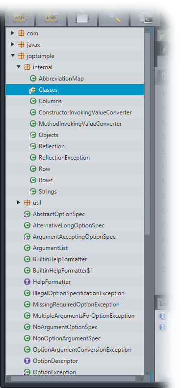The file tree shows the current contents of the loaded program. The icons next to class names indicate the access modifiers of the class (Blue for interface, brown for enum, green for standard class. Modifiers such as abstract, synthetic, etc. are added as overlays). Once the tree is selected you can navigate the tree with the arrow keys or the mouse. Pressing enter or double clicking will open a class. You can also drag and drop a file into this area to load a new program.
Main Panel
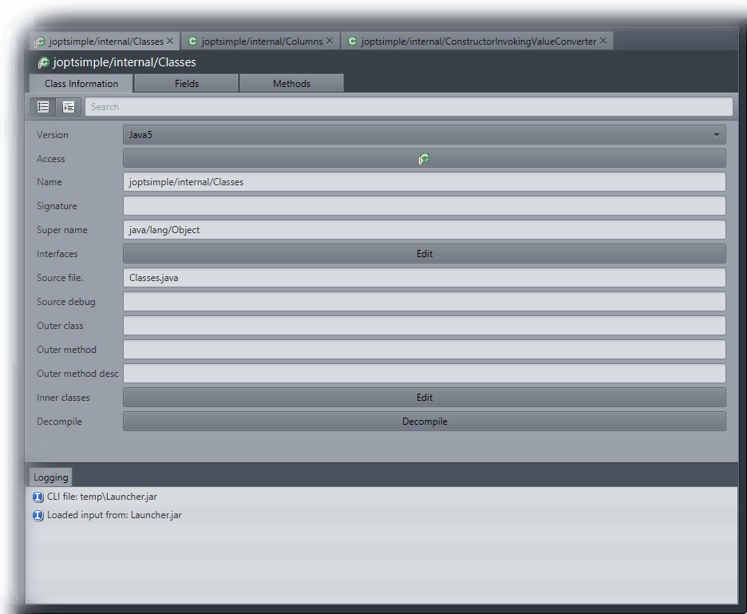The main panel contains all of the information about a class. Across the top is a series of currently opened classes. Below that is a panel for the current class. Each class has three tabs, one for class information, then two more for the field and method tables. At the bottom of this panel is a logging panel. This will include informative messages about current actions as well as error messages (Which can be expanded by clicking on the line).
Keybinds
Global keybinds are activated by holding control and an additonal key. The current set of keybinds can be found on the options page. All of the keybinds can be modified or disabled in the config menu.
User Interface: Secondary Windows
Search
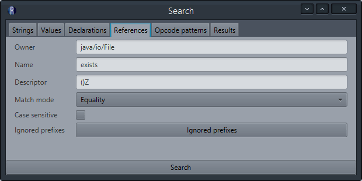The search window allows for multiple types of searches across the entire loaded program. Not all parameters are required when searching. For example if you wish to find all references to the class java/io/File use the references search and only specify the owner as java/io/File. This will show all references to the class. If you wish to narrow results down to only boolean function calls then you could specify the descriptor as ()Z. The same approach applies to all multi-parameter search types.
- Strings: Search for string constants
- Text: The text to search for.
- Match mode: How to match against the text.
- Contains: Matches will contain the given text.
- Starts with: Matches will start with the given text.
- Ends with: Matches will end with the given text.
- Equality: Matches will exactly match the given text.
- Regex: Matches will satisfy the regex pattern given in text.
- Case sensitive: Modifier for match mode, force matches to be case-sensitive. Value is overriden if match mode is set to regex.
- Ignored prefixes: A list of class prefixes to ignore. Specifying a name in this list will exclude all results from that class or package.
- Values: Search for numeric constants
- Value: Numeric value to search for.
- Ignored prefixes: A list of class prefixes to ignore. Specifying a name in this list will exclude all results from that class or package.
- Declarations: Search for declared members
- Owner: Class name that defines a member.
- Name: Name of defined member.
- Descriptor: Descriptor of defined member.
- Match mode: How to match against the text inputs (Owner, name, descriptor).
- Contains: Matches will contain the given text.
- Starts with: Matches will start with the given text.
- Ends with: Matches will end with the given text.
- Equality: Matches will exactly match the given text.
- Regex: Matches will satisfy the regex pattern given in text.
- Case sensitive: Modifier for match mode, force matches to be case-sensitive. Value is overriden if match mode is set to regex.
- Ignored prefixes: A list of class prefixes to ignore. Specifying a name in this list will exclude all results from that class or package.
- References: Search for references to members
- Owner: Class name that defines a referenced member.
- Name: Name of referenced member.
- Descriptor: Descriptor of referenced member.
- Match mode: How to match against the text inputs (Owner, name, descriptor).
- Contains: Matches will contain the given text.
- Starts with: Matches will start with the given text.
- Ends with: Matches will end with the given text.
- Equality: Matches will exactly match the given text.
- Regex: Matches will satisfy the regex pattern given in text.
- Case sensitive: Modifier for match mode, force matches to be case-sensitive. Value is overriden if match mode is set to regex.
- Ignored prefixes: A list of class prefixes to ignore. Specifying a name in this list will exclude all results from that class or package.
- Opcode patterns: Search for patterns in method instructions
- Opcodes: A list of opcodes to match. You may specify additional information by seeing how Recaf displays existing opcodes.
- Ignored prefixes: A list of class prefixes to ignore. Specifying a name in this list will exclude all results from that class or package.
- Match mode: How to match against the opcode pattern text
- Contains: Matches will contain the given text.
- Starts with: Matches will start with the given text.
- Ends with: Matches will end with the given text.
- Equality: Matches will exactly match the given text.
- Regex: Matches will satisfy the regex pattern given in text.
- Case sensitive: Modifier for match mode, force matches to be case-sensitive. Value is overriden if match mode is set to regex.
When a search is completed the results are shown in a format similar to the file tree. It is navigated in the same way. The only difference is that members and opcodes can be shown in this tree. All of which can be selected and opened. When an item is opened it will open the class in the main panel and open any neccesary secondary window (If you select a member or opcode for instance).
Config
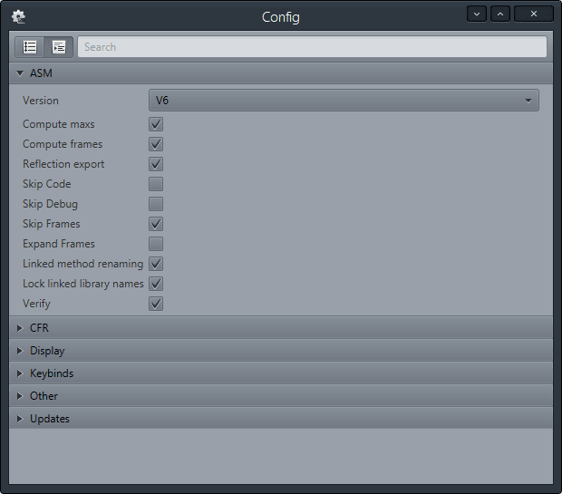The config window groups together all of the different options. For descriptions of each option you can hover over the name or read the option table here. Some options may require a restart to come into effect.
History
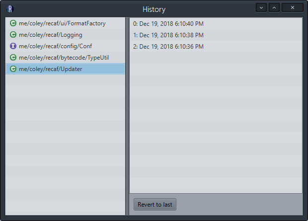The history window shows a list of all classes with save-states. When one of the classes is selected you can see the existing save states in order of when they were created. You can revert any changes to the most recent state by clicking the "Revert to last" button. This will remove the state from the list and discard any changes made after that save-state was created.
Attach
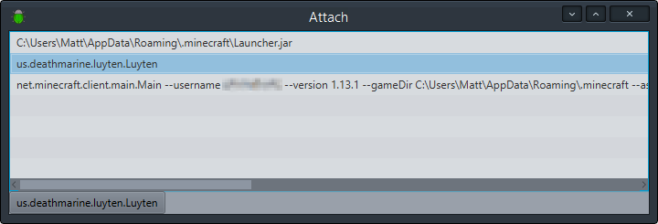The attach window shows running java processes. Selecting one and clicking the button below (which changes to match the selected JVM process) will load Recaf as a Java agent in the process. This will allow you to modify existing code in the process while it is running. When Recaf opens as an agent you can save your changes to the live applicaiton via "File->Apply changes". You can dump the classes of the attached program with the standard export functionality.
Note: Limitations may apply depending on the way instrumentation is implemented in whichever Java virtual machine you have installed. Typically the only limitation is the inability to add new fields and method definitions to classes. Everything can be modified, but no new definitions may be added.
Note: It is also worth mentioning that method redefinitions only take affect after following calls to the method. For instance you cannot call a method with an infinite loop and edit in an exit condition.
User Interface: Editors
Class Panel
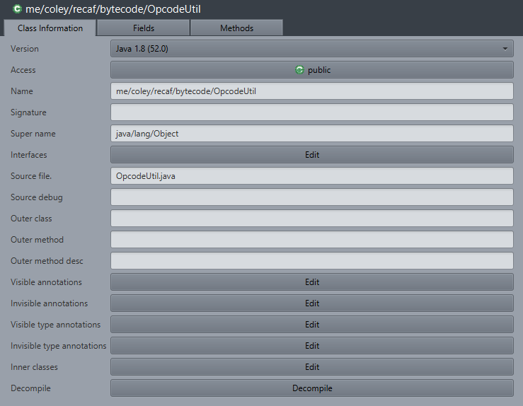The class panel contains class information. For descriptions of each of the values you can hover over the label. All items are updated as you modify the values. Clicking any of the "Edit" will open an appropriate editor window.
Decompile
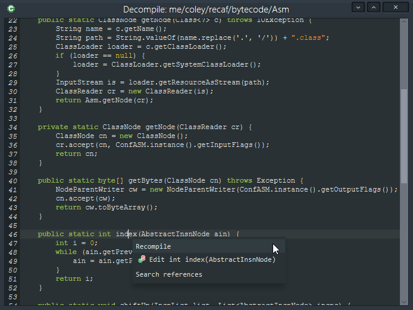At the bottom of the Class Panel a decompile button will show the decompiled code using CFR. If you are running recaf via the JDK you can also edit this code and recompile it. To recompile the decompiled code, right click and select "Recompile". Since decompilation is not always perfect this may not be viable in complex or obfuscated classes, but works very well in small and simplistic classes.
This window also attempts to use the JavaParser api to detect referenced classes, fields, and methods. This allows the the following functionality:
- Jumping to member definitions
- Searching for member references
- Searching for class references
The code parser also allows this detection in method bodies. Most items will support some action when right-clicked.
Fields Table
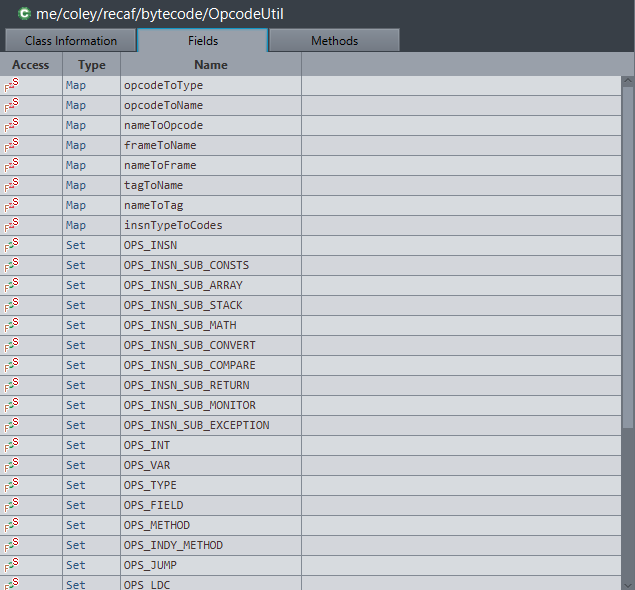The fields table shows all fields in the class in a sortable table. The colums are the field's access modifiers, type, and name. Clicking on the category header will sort the table by that value.
To edit a field, double-click the field's row.
To add or remove a field, right click the table (anywhere) and select "Add" or "Remove" respectively.
To search for where the field is referenced in the program, right click the field's row and select "References" from the menu.
Methods Table
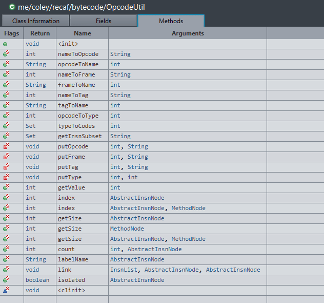The methods table shows all methods in the class in a sortable table. The colums are the methods's access modifiers, return type, name, and argument types. Clicking on the category header will sort the table by that value.
To edit a method, double-click the method's row.
To add or remove a method, right click the table (anywhere) and select "Add" or "Remove" respectively. As an alternative to adding a method, you can also select "Duplicate" to copy an existing method.
To search for where the method is referenced in the program, right click the method's row and select "References" from the menu.
To see the method's decompiled code, select "Decompile". This will decompile the method using CFR.
To edit a method's code, select "Instructions" from the menu. This will open the Instructions window.
Field Window
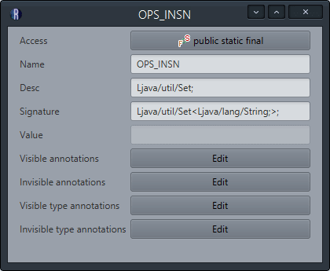The field window shows a field's information. This includes anything pertaining to the definition of the field, like the access modifiers, name, type descriptor, and annotations. For primitive fields (int, long, etc.) the DefaultValue can also be specified. Object types can not have default values set in this field and instead must be defined in a class's constructor or static block (depending on the field's access modifiers).
Annotations
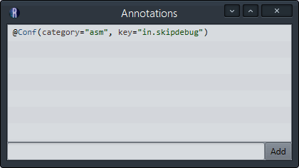Fields can have different kinds of annotations applied to them, but they all share the same window. To remove an annotation right click it and select "Remove". To add an annotation specify the name using an internal descriptor format (Lyour/type/Here;) and click the "Add" button. Specifying attribute data is not yet complete.
Method Window
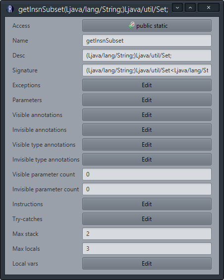The method window shows a method's information. This includes anything pertaining to the definition of the method, like the access modifiers, name, type descriptor, instructions, local variables, and annotations.
Exceptions
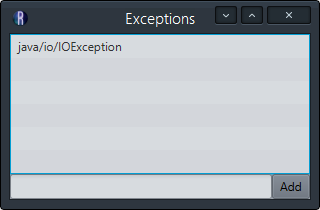The exceptions window shows all exceptions that apply to the method. To remove an exception right click it and select "Remove", or select it and hit the Delete key. To add a new exception enter the full name of the exception class and hit the "Add" button.
Parameters
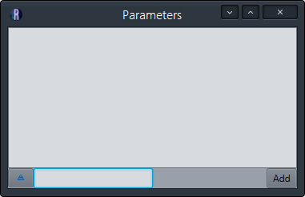The parameters window shows parameter variables with their access modifiers. This list can be empty even when methods have parameters.
Annotations
Methods can have different kinds of annotations applied to them, but they all share the same window. To remove an annotation right click it and select "Remove", or select it and hit the Delete key. To add an annotation specify the name using an internal descriptor format (Lyour/type/Here;) and click the "Add" button. Specifying attribute data is not yet complete.
Try-Catch
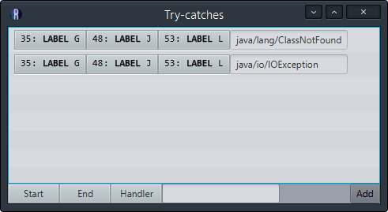The try-catch window shows all try-catch block in the method's instructions. To edit the blocks ranges you may click the label buttons and select a new label from the dropdown menu. To insert a new try-catch block fill out the label buttons at the bottom then specify an exception type. Click "Add" to submit the new try-catch block. The fields in order are:
- Start index: The first frame before where the try appears. This marks the beginning of the try block.
- End index: The final frame before where the catch appears. This marks the end of the try block.
- Handler index: The first frame after where the catch appears. This marks the beginning of the catch block.
Local Variables
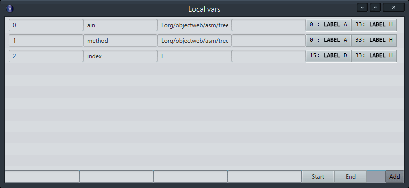The local variable window shows all variables in the method. Like other windows hovering over the input fields at the bottom will tell you what they are. For reference they are:
- Index: The variable's index.
- Name: The variable's name. Only used as debug information.
- Type descriptor: The variable's declared type.
- Type signature: The variable's generic declared type. Optional and only used as debug information.
- Begin index: The first frame before the variable is referenced.
- End index: The final frame after the variable is done being referenced.
Decompile
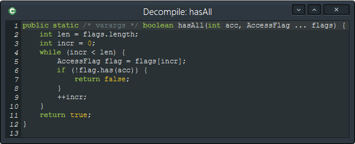Methods can be decompiled via the right-click menu in the method panel. If you update a method's bytecode while the method decompilation window is open, the decompilation will update to reflect your changes. Unlike the full-class decompile window, you cannot recompile the code in this window.
Instructions
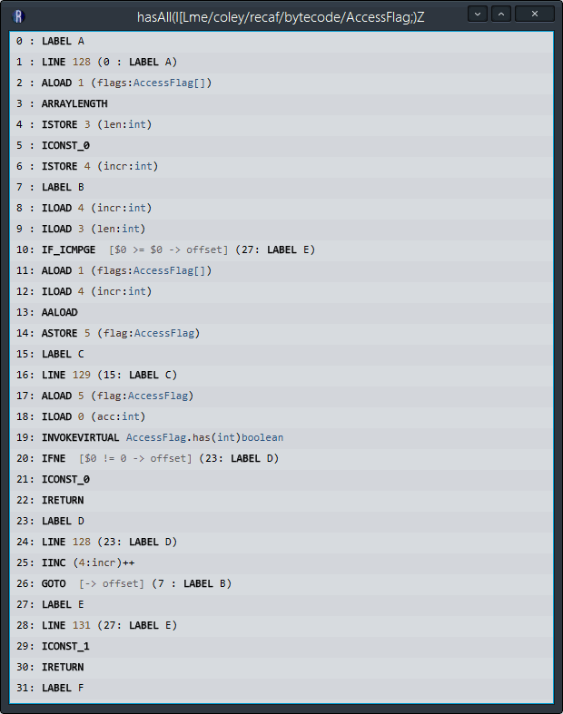The instructions window is where you edit a method's opcodes. Right clicking an opcode will present some options:
- Edit: Show the opcode's properties window. (Also done via double clicking an opcode)
- Show stack/locals: Open a window that shows the stack. It will update to show you the current stack value as you select different opcodes in the method.
- Shift up: Move the selected opcode(s) up.
- Shift down: Move the selected opcode(s) down.
- Save as block: Save the selected opcodes as a "block". This will let you paste the block anywhere else that you like. Saved blocks are stored in the config directory's rc_blocks.json file. You can edit, remove, and create your own blocks in this file.
(You need to select multiple opcodes for this option to appear.) - Insert block: Opens the block window and prompts you to select a block to insert into the method before or after the selected opcode.
- Add: Add a new opcode before or after the selected opcode(s). Opens the opcode creation window.
- Remove: Remove the selected opcode(s).
As seen in the animation above, selecting different opcodes results in some highlights appearing.
- When selecting an opcode that references an indexed variable, all other opcodes referencing that variable are highlighted.
- When selecting a jump opcode the potential destinations are highlighted.
- Green is where the program will jump to if the jump operation succeeds.
- Red is where the program will jump to if the jump operation fails.
- When selecting a switch opcode the case destinations are highlighted.
- When selecting a label any opcode that lists it as a potential destination (Jumps or switches) those opcodes will be highlighted.
For opcode editing and insertion windows, opcodes will be presented in a drop-down menu. You can shorten the menu's list by typing the name of the opcode you want. Non-matching items will be temporarily hidden.
StackWatcher
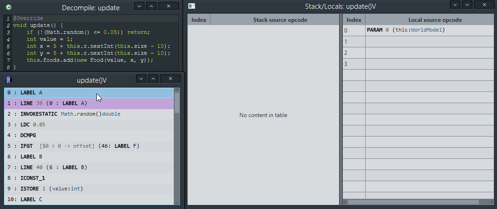The StackWatcher window can be opened by right-clicking any opcode and selecting "Show Stack/Locals". It shows the current value of the stack and local tables based on the current selected opcodes in a method's instructions window. As seen in the animation as the selection moves through the code, the stack is updated. When a local-variable store opcode is called, the stack is shifted over into the local column.
Blocks
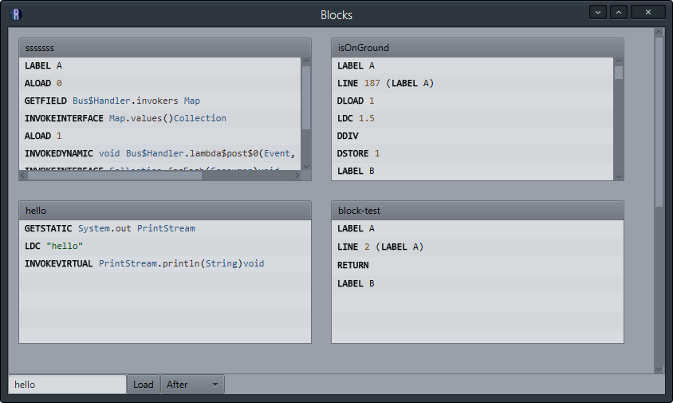The blocks window shows the currently saved blocks in a 2xN grid. You can click on the block title to auto-complete the text-input below. Clicking "Load" will insert the specified block into the method.
For quicker access and non-permanant storage, you can alternatively use the copy and paste keys to directly select opcodes and paste them elsewhere.
Verification
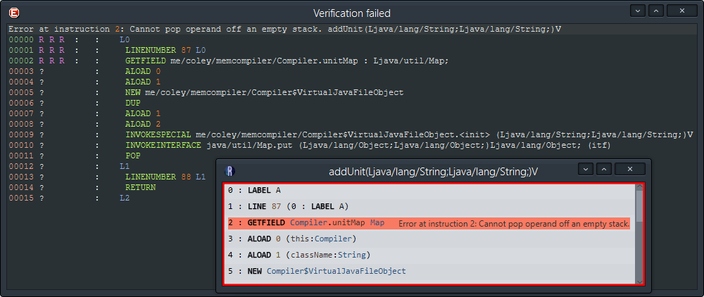All changes are run through a verification process. If a change to a method's instructions results in unverifiable code the instruction that caused the verification failure is highlighted and the error is shown. If you attempt to export your program with errors then the larger verification window is displayed. It shows the method in question along with some additional information about the verification failure to show what the issue is.
Customization & Plugins
Recaf uses JavaFX which allows the user interface to be styled with CSS. For more information about changing the visual style of recaf see the theme guide.
Additional functionality can be added to Recaf through the plugin system. To learn about using and creating plugins see the plugin guide.